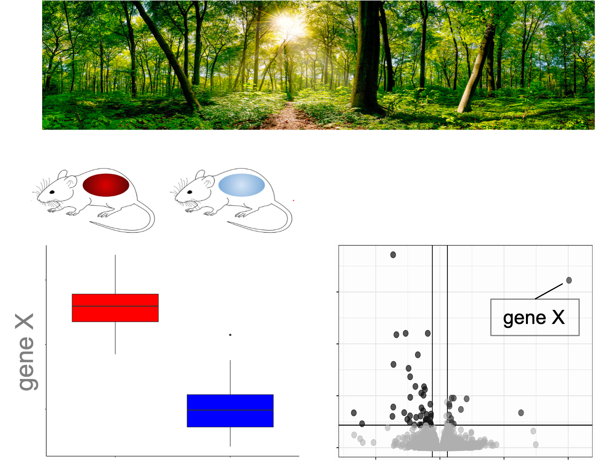
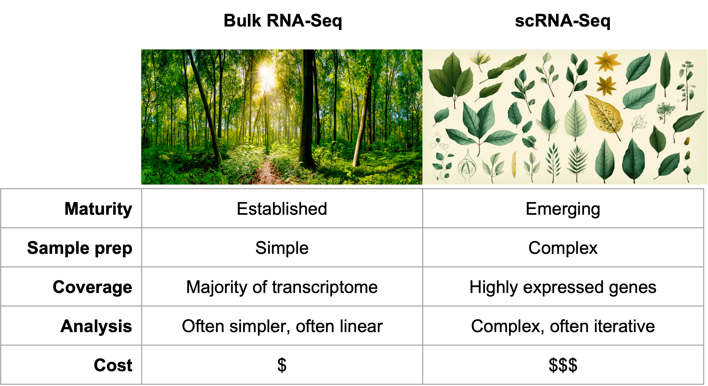
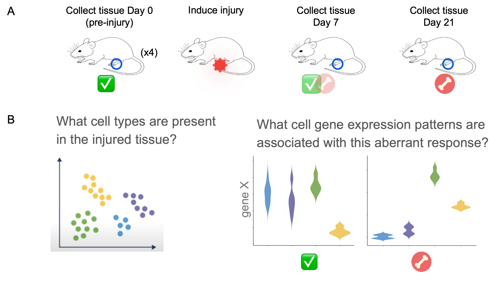

Workflow Overview

Objectives
- List some applications of scRNA-Seq.
- Compare and contrast the capabilities and challenges in scRNA-Seq vs
bulk RNA-Seq approaches.
- Introduce a specific experimental model to guide discussion and
learning.
- Outline the abstract approach to single-cell sequencing and consider
the 10x Genomics platform in more detail.
- Consider common challenges in executing these initial steps.
Overview of bulk RNA-seq and scRNA-Seq
Next Generation Sequencing (NGS) enables many powerful experimental
designs and analysis approaches including variant identification,
chromatin accessibility, gene expression, and more. Before we dive into
the complexities of single-cell RNA-Seq analysis, it’s beneficial to
review the new perspectives afforded by a scRNA-Seq single cell approach
and helpful to consider scRNA-Seq alongside a traditional bulk RNA-Seq
approach.
|
Bulk RNA-Seq approach
|
|

|
|
Bulk RNA-seq typically involves comparing the expression levels of genes
between sets of tissues, e.g. untreated and treated mice. This enables
researchers to characterize distinct expression patterns for a specific
gene and also expression changes across functionally related genes or
pathways. This is valuable because it provides an overall snapshot of
the average expression program across the sample. However, considering
the sample a single homogeneous population of cells can obscure subtle
changes or patterns in expression.
|
|
Single-cell RNA-Seq approach
|

|
|
Instead of looking at the whole forest, that is to say, the average
of the gene expression in a tissue or a biofluid, single cell
illuminates expression for a collection of individual cells (i.e. you
can now see consider individual trees). This enables similar
perspectives to bulk plus a few more:
- What kinds of cells are present in this sample?
- How does the cell population structure change between
groups/conditions?
- What are the expression patterns between cell types or between
groups/conditions?
- How do cells change over time and how might we affect that
development?
|
Contrasting bulk RNA-seq with scRNA-Seq
Bulk and single-cell approaches are fundamentally complementary
approaches where bulk RNA-Seq provides a “forest-level” view while
scRNA-Seq shows the individual trees. Compared to bulk RNA-Seq,
scRNA-Seq provides powerful new perspectives. But it isn’t without
challenges or downsides.
|
Bulk vs. Single-Cell
|
|

|
- Single-cell is less mature than bulk.
- Single-cell sample prep is more complex than bulk.
- Single-cell typically sees only the subset of highly expressed
genes.
- Single cell analysis is typically more complex.
- Single cell analysis costs more than bulk analysis.
|
Consider a specific scRNA-Seq experiment
These concepts can be abstract. Acknowledging that the basic concepts
are broadly applicable, it’s helpful to ground the conversation in
aspecific scRNA-Seq experiment.
|
Consider a specific experiment
|
|

|
|
In this workshop we will be focusing on an experiment conducted at UM
on a mouse model where a soft tissue injury is followed by an aberrant
injury response that generates bone tissue. For more details on this
experiment, it’s original analysis and the biology of heterotopic
ossification, see the full paper [1].
- A simplified version of the experiment:
- A sample of mouse tissue is extracted from a healthy mouse.
- The researcher induces a burn at the sample site.
- The researchers re-sample tissue from the site at several time
points.
- Each sample undergoes scRNA-Seq prep and analysis. (This is
replicated across four mice.)
- The scRNA-Seq analysis of this sample can reveal the population of
cell types present and also the gene expression patterns of each cell
time over time.
|
How scRNA-Seq works
It’s also useful to orient on how scRNA-Seq works at an abstract
level. There are many different platforms and protocols, but many have
steps similar to below.
|
Single cell protocol (from 30k feet)
|

|
- Sample tissue (or biofluid) is collected.
- Tissue is dissociated into a suspension of healthy,
intact cells
- Cells are physically isolated.
- Cell transcripts converted to cDNA labeled with their cell of
origin.
- cDNAs from all cells is pooled
- cDNAs are undergo library prep and are sequenced
- The resulting transcript sequences can be partitioned into
(putative) cells computationally.
|
10x Genomics 3’ gene expression
It’s useful to elaborate how transcripts are labeled with their cell
of origin because this will help us understand how downstream QC and
analysis works. The specifics of the steps depend on the platform and
the specific libary prep protocol. We will focus on the 10x
Genomics 3’ gene expression approach[2].
|
A 10x Genomics single cell protocol (from 10k feet)
|

|
- 10x Genomics uses microfluidics to combine an isolated cell with a
manufactured oligo-bead in an aqueous droplet in an oil emulsion. The
oil isolates each droplet, effectively creating a reaction vessel for
each cell-bead dyad.
- Ideally, each droplet contains reaction enzymes (carried in the
aqueous solution), a single bead and a single healthy, intact cell. The
cell is lysed to release the mRNA transcripts into the droplet.
- The beads are covered with a lawn of milions of oligos. Each oligo
is designed to interact with poly-A tailed mRNAs and the enzymes to
produce a complementary DNA molecule (cDNA).
- Each cDNA contains:
- the sequence of an individual mRNA transcript (from the cell)
- flanking sequence added for downstream library prep
- a 12bp Unique Molecular Identifier (UMI): the UMIs are unique for
each of the oligos on the bead ensuring each UMI represents a
single mRNA. (This enables reliable de-duplication following
sequencing.)
- 16 bp barcode sequence: all barcodes are identical for a given bead,
so the barcode sequence acts as a molecular label for each transcript;
each barcode represent a distinct cell of origin for that
mRNA.
|
|
Consider (just) two droplets
|

|
- Each droplet converts mRNAs into cDNAs that contain the oligo
sequence and the mRNA sequence.
- Each mRNA sequence will get a distinct UMI, so one UMI = one
mRNA.
- For a single droplet, the cDNA barcodes will all match. Barcodes
will be distinct across droplets.
|
|
From droplets to matrix
|

|
- Once mRNA transcripts have been converted to barcode-labeled cDNA
the oil emulsion can be broken and the cDNA molecules are pooled
together.
- cDNA molecules undergo several conventional library prep steps to
enable sequencing
- The sequencer call bases for each sequence. For a large sequencing
run, this might contain many samples, several experiments, and even
multiple experiment types.
- The resulting 10x FASTQ files have a specific structure.
- Read2 represents the mRNA sequence.
- Read1 represents the barcode and UMI
- Specialized software bins each distinct barcode into a a putative
cell and aligns the mRNA sequence against a genome build.
- Alignments for features (genes) are quantified across all barcodes
to create a feature barcode matrix.
|
Common problems and challenges
|
Some droplets don’t work as intended
|

|
- Interpreting the sequencing outputs is simplest when each droplet
contains a single bead and a single healthy cell. The system is
optimized for this outcome and typically the majority of droplets will
follow this pattern. However, in each run there are always a few
complicating edge cases to consider.
- Sometimes a droplet contains a bead but no cell. This is actually
common but it’s impact is slight because in the absence of mRNA, the
enzymes won’t produce cDNA. In effect, the droplet appears empty and is
discarded.
- Sometimes two beads land in the same droplet with a cell. In theory,
the cells mRNA would appear to come from two droplets (i.e. two cells)
each with half the expected expression levels. In practice this rarely
happens because the microfluidics are tuned to avoid this.
- Sometimes two cells join with a single bead in a droplet creating a
doublet. This happens when some of the cells are not
fully dissociated from each other. In this case, the mRNAs from two
cells will receive the same label; the expression programs are merged
and the overall expected expression is roughly doubled.
- Sometimes the stress of the protocol induces cells to start
apoptosis. This confounds analysis because the expression programs
aren’t about the model biology but instead artifacts from the
experimental platform.
- Sometimes dissociated cells become so stressed they start to break
down in the suspension. When that happens, the mRNAs from the popped
cell’s combine together in the aqueous flow to create soup of ambient
RNA. This appears as a droplet with extremely low expression.
|
To reliably interpret the sequence output we need to solve three
problems:
|
Interpreting 10x sequence output
|

|
- How do we associate each sequence with an individual cell?
- How do we align and quantify the sequences to create an expression
matrix?
- How do we distinguish good cells from problem edge cases?
|
To expedite the primary analysis and QC tasks above, 10x Genomics
provides the tool Cell Ranger, which we will discuss in the next
lesson.
Conclusion
- scRNA-seq offers a powerful and nuanced approach to studying gene
expression at the cellular level. This technique can illuminate
biological mechanisms of healthy tissue or disease as well as extend our
understanding of cellular heterogeneity, responses to interventions, and
the cell state dynamics.
- scRNA-Seq experiments are typically more complex and often more
expensive than bulk RNA-Seq.
- scRNA-Seq experiments leverage existing NGS approaches by adding a
molecular label to each mRNA, enabling us to connect all the mRNA’s from
a cell to a distinct cell of origin computationally following
sequencing.
LS0tCnRpdGxlOiAiT3JpZW50aW5nIG9uIHNjUk5BLVNlcSIKYXV0aG9yOiAiVU0gQmlvaW5mb3JtYXRpY3MgQ29yZSIKZGF0ZTogImByIFN5cy5EYXRlKClgIgpvdXRwdXQ6CiAgICAgICAgaHRtbF9kb2N1bWVudDoKICAgICAgICAgICAgaW5jbHVkZXM6CiAgICAgICAgICAgICAgICBpbl9oZWFkZXI6IGhlYWRlci5odG1sCiAgICAgICAgICAgIHRoZW1lOiBwYXBlcgogICAgICAgICAgICB0b2M6IHRydWUKICAgICAgICAgICAgdG9jX2RlcHRoOiA0CiAgICAgICAgICAgIHRvY19mbG9hdDogdHJ1ZQogICAgICAgICAgICBudW1iZXJfc2VjdGlvbnM6IGZhbHNlCiAgICAgICAgICAgIGZpZ19jYXB0aW9uOiB0cnVlCiAgICAgICAgICAgIG1hcmtkb3duOiBHRk0KICAgICAgICAgICAgY29kZV9kb3dubG9hZDogdHJ1ZQotLS0KCjxzdHlsZSB0eXBlPSJ0ZXh0L2NzcyI+CmJvZHksIHRkIHsKICAgZm9udC1zaXplOiAxOHB4Owp9CmNvZGUucnsKICBmb250LXNpemU6IDEycHg7Cn0KcHJlIHsKICBmb250LXNpemU6IDEycHgKfQoKdGFibGUuZmlnLCB0aC5maWcsIHRkLmZpZyB7CiAgYm9yZGVyOiAxcHggc29saWQgYmxhY2s7CiAgYm9yZGVyLWNvbGxhcHNlOiBjb2xsYXBzZTsKICBwYWRkaW5nOiAxNXB4Owp9Cgo8L3N0eWxlPgoKIyBXb3JrZmxvdyBPdmVydmlldyB7LnVubGlzdGVkIC51bm51bWJlcmVkfQoKPGJyLz4KPGltZyBzcmM9ImltYWdlcy93YXlmaW5kZXIvd2F5ZmluZGVyLnBuZyIgYWx0PSJ3YXlmaW5kZXIiIHN0eWxlPSJoZWlnaHQ6IDQwMHB4OyIvPgo8YnIvPgo8YnIvPgoKIyBPYmplY3RpdmVzCgotIExpc3Qgc29tZSBhcHBsaWNhdGlvbnMgb2Ygc2NSTkEtU2VxLgotIENvbXBhcmUgYW5kIGNvbnRyYXN0IHRoZSBjYXBhYmlsaXRpZXMgYW5kIGNoYWxsZW5nZXMgaW4gc2NSTkEtU2VxIHZzIGJ1bGsgUk5BLVNlcSBhcHByb2FjaGVzLgotIEludHJvZHVjZSBhIHNwZWNpZmljIGV4cGVyaW1lbnRhbCBtb2RlbCB0byBndWlkZSBkaXNjdXNzaW9uIGFuZCBsZWFybmluZy4KLSBPdXRsaW5lIHRoZSBhYnN0cmFjdCBhcHByb2FjaCB0byBzaW5nbGUtY2VsbCBzZXF1ZW5jaW5nIGFuZCBjb25zaWRlciB0aGUgMTB4IEdlbm9taWNzIHBsYXRmb3JtIGluIG1vcmUgZGV0YWlsLgotIENvbnNpZGVyIGNvbW1vbiBjaGFsbGVuZ2VzIGluIGV4ZWN1dGluZyB0aGVzZSBpbml0aWFsIHN0ZXBzLgoKPGJyLz4KPGJyLz4KCiMgT3ZlcnZpZXcgb2YgYnVsayBSTkEtc2VxIGFuZCBzY1JOQS1TZXEKCk5leHQgR2VuZXJhdGlvbiBTZXF1ZW5jaW5nIChOR1MpIGVuYWJsZXMgbWFueSBwb3dlcmZ1bCBleHBlcmltZW50YWwgZGVzaWducyBhbmQKYW5hbHlzaXMgYXBwcm9hY2hlcyBpbmNsdWRpbmcgdmFyaWFudCBpZGVudGlmaWNhdGlvbiwgY2hyb21hdGluIGFjY2Vzc2liaWxpdHksIApnZW5lIGV4cHJlc3Npb24sIGFuZCBtb3JlLiBCZWZvcmUgd2UgZGl2ZSBpbnRvIHRoZSBjb21wbGV4aXRpZXMgb2Ygc2luZ2xlLWNlbGwKUk5BLVNlcSBhbmFseXNpcywgaXQncyBiZW5lZmljaWFsIHRvIHJldmlldyB0aGUgbmV3IHBlcnNwZWN0aXZlcyBhZmZvcmRlZCBieQphIHNjUk5BLVNlcSBzaW5nbGUgY2VsbCBhcHByb2FjaCBhbmQgaGVscGZ1bCB0byBjb25zaWRlciBzY1JOQS1TZXEgYWxvbmdzaWRlIGEKdHJhZGl0aW9uYWwgYnVsayBSTkEtU2VxIGFwcHJvYWNoLgoKPHRhYmxlIGNsYXNzPSdmaWcnPjx0cj48dGggY2xhc3M9J2ZpZyc+QnVsayBSTkEtU2VxIGFwcHJvYWNoPC90aD48L3RyPgo8dHI+PHRkIGNsYXNzPSdmaWcnPiFbXShpbWFnZXMvMDBBLU9yaWVudGluZ09uU2NSTkFTZXEvYnVsa1JOQS1TZXEtY2FwYWJpbGl0aWVzLnBuZyk8L3RkPjwvdHI+Cjx0cj48dGQgY2xhc3M9J2ZpZyc+CkJ1bGsgUk5BLXNlcSB0eXBpY2FsbHkgaW52b2x2ZXMgY29tcGFyaW5nIHRoZSBleHByZXNzaW9uIGxldmVscyBvZiBnZW5lcyBiZXR3ZWVuCnNldHMgb2YgdGlzc3VlcywgZS5nLiB1bnRyZWF0ZWQgYW5kIHRyZWF0ZWQgbWljZS4gVGhpcyBlbmFibGVzIHJlc2VhcmNoZXJzIHRvIApjaGFyYWN0ZXJpemUgZGlzdGluY3QgZXhwcmVzc2lvbiBwYXR0ZXJucyBmb3IgYSBzcGVjaWZpYyBnZW5lIGFuZCBhbHNvIApleHByZXNzaW9uIGNoYW5nZXMgYWNyb3NzIGZ1bmN0aW9uYWxseSByZWxhdGVkIGdlbmVzIG9yIHBhdGh3YXlzLiBUaGlzIGlzIAp2YWx1YWJsZSBiZWNhdXNlIGl0IHByb3ZpZGVzIGFuIG92ZXJhbGwgc25hcHNob3Qgb2YgdGhlIGF2ZXJhZ2UgZXhwcmVzc2lvbiAKcHJvZ3JhbSBhY3Jvc3MgdGhlIHNhbXBsZS4gSG93ZXZlciwgY29uc2lkZXJpbmcgdGhlIHNhbXBsZSBhIHNpbmdsZSBob21vZ2VuZW91cwpwb3B1bGF0aW9uIG9mIGNlbGxzIGNhbiBvYnNjdXJlIHN1YnRsZSBjaGFuZ2VzIG9yIHBhdHRlcm5zIGluIGV4cHJlc3Npb24uCjwvdGQ+PC90cj4KPC90YWJsZT4KPGJyLz4KPGJyLz4KPHRhYmxlIGNsYXNzPSdmaWcnPjx0cj48dGggY2xhc3M9J2ZpZyc+U2luZ2xlLWNlbGwgUk5BLVNlcSBhcHByb2FjaDwvdGg+PC90cj4KPHRyPjx0ZCBjbGFzcz0nZmlnJz4hW10oaW1hZ2VzLzAwQS1PcmllbnRpbmdPblNjUk5BU2VxL3NjUk5BLVNlcS1jYXBhYmlsaXRpZXMucG5nKTwvdGQ+PC90cj4KPHRyPjx0ZCBjbGFzcz0nZmlnJz4KSW5zdGVhZCBvZiBsb29raW5nIGF0IHRoZSB3aG9sZSBmb3Jlc3QsIHRoYXQgaXMgdG8gc2F5LCB0aGUgYXZlcmFnZSBvZiB0aGUgZ2VuZSAKZXhwcmVzc2lvbiBpbiBhIHRpc3N1ZSBvciBhIGJpb2ZsdWlkLCBzaW5nbGUgY2VsbCBpbGx1bWluYXRlcyBleHByZXNzaW9uIGZvciBhIApjb2xsZWN0aW9uIG9mIGluZGl2aWR1YWwgY2VsbHMgKGkuZS4geW91IGNhbiBub3cgc2VlIGNvbnNpZGVyIGluZGl2aWR1YWwgdHJlZXMpLgpUaGlzIGVuYWJsZXMgc2ltaWxhciBwZXJzcGVjdGl2ZXMgdG8gYnVsayBwbHVzIGEgZmV3IG1vcmU6CgoxLiBXaGF0IGtpbmRzIG9mIGNlbGxzIGFyZSBwcmVzZW50IGluIHRoaXMgc2FtcGxlPyAKMS4gSG93IGRvZXMgdGhlIGNlbGwgcG9wdWxhdGlvbiBzdHJ1Y3R1cmUgY2hhbmdlIGJldHdlZW4gZ3JvdXBzL2NvbmRpdGlvbnM/CjEuIFdoYXQgYXJlIHRoZSBleHByZXNzaW9uIHBhdHRlcm5zIGJldHdlZW4gY2VsbCB0eXBlcyBvciBiZXR3ZWVuIGdyb3Vwcy9jb25kaXRpb25zPwoxLiBIb3cgZG8gY2VsbHMgY2hhbmdlIG92ZXIgdGltZSBhbmQgaG93IG1pZ2h0IHdlIGFmZmVjdCB0aGF0IGRldmVsb3BtZW50PwoKPC90ZD48L3RyPgo8L3RhYmxlPgoKPGJyLz4KPGJyLz4KCiMjIENvbnRyYXN0aW5nIGJ1bGsgUk5BLXNlcSB3aXRoIHNjUk5BLVNlcQoKQnVsayBhbmQgc2luZ2xlLWNlbGwgYXBwcm9hY2hlcyBhcmUgZnVuZGFtZW50YWxseSBjb21wbGVtZW50YXJ5IGFwcHJvYWNoZXMgd2hlcmUKYnVsayBSTkEtU2VxIHByb3ZpZGVzIGEgImZvcmVzdC1sZXZlbCIgdmlldyB3aGlsZSBzY1JOQS1TZXEgc2hvd3MgdGhlIGluZGl2aWR1YWwgCnRyZWVzLiBDb21wYXJlZCB0byBidWxrIFJOQS1TZXEsIHNjUk5BLVNlcSBwcm92aWRlcyBwb3dlcmZ1bCBuZXcgcGVyc3BlY3RpdmVzLiAKQnV0IGl0IGlzbid0IHdpdGhvdXQgY2hhbGxlbmdlcyBvciBkb3duc2lkZXMuCgo8dGFibGUgY2xhc3M9J2ZpZyc+PHRyPjx0aCBjbGFzcz0nZmlnJz5CdWxrIHZzLiBTaW5nbGUtQ2VsbDwvdGg+PC90cj4KPHRyPjx0ZCBjbGFzcz0nZmlnJz4hW10oaW1hZ2VzLzAwQS1PcmllbnRpbmdPblNjUk5BU2VxL2J1bGtfdl9zYy5wbmcpPC90ZD48L3RyPgo8dHI+PHRkIGNsYXNzPSdmaWcnPgoKMS4gU2luZ2xlLWNlbGwgaXMgbGVzcyBtYXR1cmUgdGhhbiBidWxrLgoxLiBTaW5nbGUtY2VsbCBzYW1wbGUgcHJlcCBpcyBtb3JlIGNvbXBsZXggdGhhbiBidWxrLgoxLiBTaW5nbGUtY2VsbCB0eXBpY2FsbHkgc2VlcyBvbmx5IHRoZSBzdWJzZXQgb2YgaGlnaGx5IGV4cHJlc3NlZCBnZW5lcy4KMS4gU2luZ2xlIGNlbGwgYW5hbHlzaXMgaXMgdHlwaWNhbGx5IG1vcmUgY29tcGxleC4KMS4gU2luZ2xlIGNlbGwgYW5hbHlzaXMgY29zdHMgbW9yZSB0aGFuIGJ1bGsgYW5hbHlzaXMuCgo8L3RkPjwvdHI+CjwvdGFibGU+Cgo8YnIvPgo8YnIvPgoKIyBDb25zaWRlciBhIHNwZWNpZmljIHNjUk5BLVNlcSBleHBlcmltZW50CgpUaGVzZSBjb25jZXB0cyBjYW4gYmUgYWJzdHJhY3QuIEFja25vd2xlZGdpbmcgdGhhdCB0aGUgYmFzaWMgY29uY2VwdHMgYXJlCmJyb2FkbHkgYXBwbGljYWJsZSwgaXQncyBoZWxwZnVsIHRvIGdyb3VuZCB0aGUgY29udmVyc2F0aW9uIGluIGFzcGVjaWZpYyAKc2NSTkEtU2VxIGV4cGVyaW1lbnQuCgo8dGFibGUgY2xhc3M9J2ZpZyc+PHRyPjx0aCBjbGFzcz0nZmlnJz5Db25zaWRlciBhIHNwZWNpZmljIGV4cGVyaW1lbnQ8L3RoPjwvdHI+Cjx0cj48dGQgY2xhc3M9J2ZpZyc+IVtdKGltYWdlcy8wMEEtT3JpZW50aW5nT25TY1JOQVNlcS9zcGVjaWZpYy1leHBlcmltZW50LnBuZyk8L3RkPjwvdHI+Cjx0cj48dGQgY2xhc3M9J2ZpZyc+CkluIHRoaXMgd29ya3Nob3Agd2Ugd2lsbCBiZSBmb2N1c2luZyBvbiBhbiBleHBlcmltZW50IGNvbmR1Y3RlZCBhdCBVTSBvbiBhIG1vdXNlIAptb2RlbCB3aGVyZSBhIHNvZnQgdGlzc3VlIGluanVyeSBpcyBmb2xsb3dlZCBieSBhbiBhYmVycmFudCBpbmp1cnkgcmVzcG9uc2UKdGhhdCBnZW5lcmF0ZXMgYm9uZSB0aXNzdWUuIEZvciBtb3JlIGRldGFpbHMgb24gdGhpcyBleHBlcmltZW50LCBpdCdzIG9yaWdpbmFsCmFuYWx5c2lzIGFuZCB0aGUgYmlvbG9neSBvZiBoZXRlcm90b3BpYyBvc3NpZmljYXRpb24sIHNlZSB0aGUgZnVsbCBwYXBlciBbWzFdXSgjUmVmZXJlbmNlcykuCgoKQSkgQSBzaW1wbGlmaWVkIHZlcnNpb24gb2YgdGhlIGV4cGVyaW1lbnQ6CgoxLiBBIHNhbXBsZSBvZiBtb3VzZSB0aXNzdWUgaXMgZXh0cmFjdGVkIGZyb20gYSBoZWFsdGh5IG1vdXNlLgoxLiBUaGUgcmVzZWFyY2hlciBpbmR1Y2VzIGEgYnVybiBhdCB0aGUgc2FtcGxlIHNpdGUuCjEuIFRoZSByZXNlYXJjaGVycyByZS1zYW1wbGUgdGlzc3VlIGZyb20gdGhlIHNpdGUgYXQgc2V2ZXJhbCB0aW1lIHBvaW50cy4KMS4gRWFjaCBzYW1wbGUgdW5kZXJnb2VzIHNjUk5BLVNlcSBwcmVwIGFuZCBhbmFseXNpcy4KKFRoaXMgaXMgcmVwbGljYXRlZCBhY3Jvc3MgZm91ciBtaWNlLikKCkIpIFRoZSBzY1JOQS1TZXEgYW5hbHlzaXMgb2YgdGhpcyBzYW1wbGUgY2FuIHJldmVhbCB0aGUgcG9wdWxhdGlvbiBvZiBjZWxsIHR5cGVzCnByZXNlbnQgYW5kIGFsc28gdGhlIGdlbmUgZXhwcmVzc2lvbiBwYXR0ZXJucyBvZiBlYWNoIGNlbGwgdGltZSBvdmVyIHRpbWUuCgo8L3RkPjwvdHI+CjwvdGFibGU+CgoKPGJyLz4KPGJyLz4KCiMgSG93IHNjUk5BLVNlcSB3b3JrcwoKSXQncyBhbHNvIHVzZWZ1bCB0byBvcmllbnQgb24gaG93IHNjUk5BLVNlcSB3b3JrcyBhdCBhbiBhYnN0cmFjdCBsZXZlbC4gVGhlcmUgCmFyZSBtYW55IGRpZmZlcmVudCBwbGF0Zm9ybXMgYW5kIHByb3RvY29scywgYnV0IG1hbnkgaGF2ZSBzdGVwcyBzaW1pbGFyIHRvIGJlbG93LgoKPHRhYmxlIGNsYXNzPSdmaWcnPjx0cj48dGggY2xhc3M9J2ZpZyc+U2luZ2xlIGNlbGwgcHJvdG9jb2wgKGZyb20gMzBrIGZlZXQpPC90aD48L3RyPgo8dHI+PHRkIGNsYXNzPSdmaWcnPiFbXShpbWFnZXMvMDBBLU9yaWVudGluZ09uU2NSTkFTZXEvc2NSTkEtU2VxLWZyb20tMzBrLnBuZyk8L3RkPjwvdHI+Cjx0cj48dGQgY2xhc3M9J2ZpZyc+CgpBKSBTYW1wbGUgdGlzc3VlIChvciBiaW9mbHVpZCkgaXMgY29sbGVjdGVkLiA8YnIvPgpCKSBUaXNzdWUgaXMgZGlzc29jaWF0ZWQgaW50byBhIHN1c3BlbnNpb24gb2YgKipoZWFsdGh5LCBpbnRhY3QqKiBjZWxscwpDKSBDZWxscyBhcmUgcGh5c2ljYWxseSBpc29sYXRlZC4KRCkgQ2VsbCB0cmFuc2NyaXB0cyBjb252ZXJ0ZWQgdG8gY0ROQSBsYWJlbGVkIHdpdGggdGhlaXIgY2VsbCBvZiBvcmlnaW4uCkUpIGNETkFzIGZyb20gYWxsIGNlbGxzIGlzIHBvb2xlZApGKSBjRE5BcyBhcmUgdW5kZXJnbyBsaWJyYXJ5IHByZXAgYW5kIGFyZSBzZXF1ZW5jZWQKRykgVGhlIHJlc3VsdGluZyB0cmFuc2NyaXB0IHNlcXVlbmNlcyBjYW4gYmUgcGFydGl0aW9uZWQgaW50byAocHV0YXRpdmUpIGNlbGxzIGNvbXB1dGF0aW9uYWxseS4gCgo8L3RkPjwvdHI+CjwvdGFibGU+Cgo8YnIvPgo8YnIvPgoKIyMgMTB4IEdlbm9taWNzIDMnIGdlbmUgZXhwcmVzc2lvbgoKSXQncyB1c2VmdWwgdG8gZWxhYm9yYXRlIGhvdyB0cmFuc2NyaXB0cyBhcmUgbGFiZWxlZCB3aXRoIHRoZWlyIGNlbGwgb2Ygb3JpZ2luCmJlY2F1c2UgdGhpcyB3aWxsIGhlbHAgdXMgdW5kZXJzdGFuZCBob3cgZG93bnN0cmVhbSBRQyBhbmQgYW5hbHlzaXMgd29ya3MuIFRoZQpzcGVjaWZpY3Mgb2YgdGhlIHN0ZXBzIGRlcGVuZCBvbiB0aGUgcGxhdGZvcm0gYW5kIHRoZSBzcGVjaWZpYyBsaWJhcnkgcHJlcCAKcHJvdG9jb2wuIFdlIHdpbGwgZm9jdXMgb24gdGhlICoqMTB4IEdlbm9taWNzIDMnIGdlbmUgZXhwcmVzc2lvbioqIGFwcHJvYWNoW1syXV0oI1JlZmVyZW5jZXMpLgoKPHRhYmxlIGNsYXNzPSdmaWcnPjx0cj48dGggY2xhc3M9J2ZpZyc+QSAxMHggR2Vub21pY3Mgc2luZ2xlIGNlbGwgcHJvdG9jb2wgKGZyb20gMTBrIGZlZXQpPC90aD48L3RyPgo8dHI+PHRkIGNsYXNzPSdmaWcnPiFbXShpbWFnZXMvMDBBLU9yaWVudGluZ09uU2NSTkFTZXEvMTB4LWdlbm9taWNzLXNjUk5BLVNlcS1mcm9tLTEway5wbmcpPC90ZD48L3RyPgo8dHI+PHRkIGNsYXNzPSdmaWcnPgoKQSkgMTB4IEdlbm9taWNzIHVzZXMgbWljcm9mbHVpZGljcyB0byBjb21iaW5lIGFuIGlzb2xhdGVkIGNlbGwgd2l0aCBhIAptYW51ZmFjdHVyZWQgb2xpZ28tYmVhZCBpbiBhbiBhcXVlb3VzIGRyb3BsZXQgaW4gYW4gb2lsIGVtdWxzaW9uLiBUaGUgb2lsIAppc29sYXRlcyBlYWNoIGRyb3BsZXQsIGVmZmVjdGl2ZWx5IGNyZWF0aW5nIGEgcmVhY3Rpb24gdmVzc2VsIGZvciBlYWNoIGNlbGwtYmVhZCAKZHlhZC4KQikgSWRlYWxseSwgZWFjaCBkcm9wbGV0IGNvbnRhaW5zIHJlYWN0aW9uIGVuenltZXMgKGNhcnJpZWQgaW4gdGhlIGFxdWVvdXMgCnNvbHV0aW9uKSwgYSBzaW5nbGUgYmVhZCBhbmQgYSBzaW5nbGUgaGVhbHRoeSwgaW50YWN0IGNlbGwuIFRoZSBjZWxsIGlzIGx5c2VkIHRvCnJlbGVhc2UgdGhlIG1STkEgdHJhbnNjcmlwdHMgaW50byB0aGUgZHJvcGxldC4KQykgVGhlIGJlYWRzIGFyZSBjb3ZlcmVkIHdpdGggYSBsYXduIG9mIG1pbGlvbnMgb2Ygb2xpZ29zLiBFYWNoIG9saWdvIGlzIApkZXNpZ25lZCB0byBpbnRlcmFjdCB3aXRoIHBvbHktQSB0YWlsZWQgbVJOQXMgYW5kIHRoZSBlbnp5bWVzIHRvIHByb2R1Y2UgYSAKY29tcGxlbWVudGFyeSBETkEgbW9sZWN1bGUgKGNETkEpLgpEKSBFYWNoIGNETkEgY29udGFpbnM6CiAgLSB0aGUgc2VxdWVuY2Ugb2YgYW4gaW5kaXZpZHVhbCBtUk5BIHRyYW5zY3JpcHQgKGZyb20gdGhlIGNlbGwpCiAgLSBmbGFua2luZyBzZXF1ZW5jZSBhZGRlZCBmb3IgZG93bnN0cmVhbSBsaWJyYXJ5IHByZXAKICAtIGEgMTJicCBVbmlxdWUgTW9sZWN1bGFyIElkZW50aWZpZXIgKFVNSSk6IHRoZSBVTUlzIGFyZSB1bmlxdWUgZm9yIGVhY2ggb2YgdGhlCiAgICBvbGlnb3Mgb24gdGhlIGJlYWQgZW5zdXJpbmcgKiplYWNoIFVNSSByZXByZXNlbnRzIGEgc2luZ2xlIG1STkEqKi4KICAgIChUaGlzIGVuYWJsZXMgcmVsaWFibGUgZGUtZHVwbGljYXRpb24gZm9sbG93aW5nIHNlcXVlbmNpbmcuKQogIC0gMTYgYnAgYmFyY29kZSBzZXF1ZW5jZTogYWxsIGJhcmNvZGVzIGFyZSBpZGVudGljYWwgZm9yIGEgZ2l2ZW4gYmVhZCwgc28gdGhlCiAgICBiYXJjb2RlIHNlcXVlbmNlIGFjdHMgYXMgYSBtb2xlY3VsYXIgbGFiZWwgZm9yIGVhY2ggdHJhbnNjcmlwdDsgCiAgICAqKmVhY2ggYmFyY29kZSByZXByZXNlbnQgYSBkaXN0aW5jdCBjZWxsIG9mIG9yaWdpbiBmb3IgdGhhdCBtUk5BKiouCjwvdGQ+PC90cj4KPC90YWJsZT4KCjxici8+Cjxici8+Cgo8dGFibGUgY2xhc3M9J2ZpZyc+PHRyPjx0aCBjbGFzcz0nZmlnJz5Db25zaWRlciAoanVzdCkgdHdvIGRyb3BsZXRzPC90aD48L3RyPgo8dHI+PHRkIGNsYXNzPSdmaWcnPiFbXShpbWFnZXMvMDBBLU9yaWVudGluZ09uU2NSTkFTZXEvdHdvLWRyb3BsZXRzLnBuZyk8L3RkPjwvdHI+Cjx0cj48dGQgY2xhc3M9J2ZpZyc+CgotIEVhY2ggZHJvcGxldCBjb252ZXJ0cyBtUk5BcyBpbnRvIGNETkFzIHRoYXQgY29udGFpbiB0aGUgb2xpZ28gc2VxdWVuY2UgYW5kIHRoZSAKbVJOQSBzZXF1ZW5jZS4KLSBFYWNoIG1STkEgc2VxdWVuY2Ugd2lsbCBnZXQgYSBkaXN0aW5jdCBVTUksIHNvIG9uZSBVTUkgPSBvbmUgbVJOQS4KLSBGb3IgYSBzaW5nbGUgZHJvcGxldCwgdGhlIGNETkEgYmFyY29kZXMgd2lsbCBhbGwgbWF0Y2guIEJhcmNvZGVzIHdpbGwgYmUgCiAgZGlzdGluY3QgYWNyb3NzIGRyb3BsZXRzLgoKPC90ZD48L3RyPgo8L3RhYmxlPgoKPGJyLz4KPGJyLz4KCgo8dGFibGUgY2xhc3M9J2ZpZyc+PHRyPjx0aCBjbGFzcz0nZmlnJz5Gcm9tIGRyb3BsZXRzIHRvIG1hdHJpeDwvdGg+PC90cj4KPHRyPjx0ZCBjbGFzcz0nZmlnJz4hW10oaW1hZ2VzLzAwQS1PcmllbnRpbmdPblNjUk5BU2VxL2Ryb3BsZXRzLXRvLW1hdHJpeC5wbmcpPC90ZD48L3RyPgo8dHI+PHRkIGNsYXNzPSdmaWcnPgoKQSkgT25jZSBtUk5BIHRyYW5zY3JpcHRzIGhhdmUgYmVlbiBjb252ZXJ0ZWQgdG8gYmFyY29kZS1sYWJlbGVkIGNETkEgdGhlIG9pbAplbXVsc2lvbiBjYW4gYmUgYnJva2VuIGFuZCB0aGUgY0ROQSBtb2xlY3VsZXMgYXJlIHBvb2xlZCB0b2dldGhlci4KQikgY0ROQSBtb2xlY3VsZXMgdW5kZXJnbyBzZXZlcmFsIGNvbnZlbnRpb25hbCBsaWJyYXJ5IHByZXAgc3RlcHMgdG8gZW5hYmxlCnNlcXVlbmNpbmcKQykgVGhlIHNlcXVlbmNlciBjYWxsIGJhc2VzIGZvciBlYWNoIHNlcXVlbmNlLiBGb3IgYSBsYXJnZSBzZXF1ZW5jaW5nIHJ1biwgdGhpcwptaWdodCBjb250YWluIG1hbnkgc2FtcGxlcywgc2V2ZXJhbCBleHBlcmltZW50cywgYW5kIGV2ZW4gbXVsdGlwbGUgZXhwZXJpbWVudCAKdHlwZXMuCkQpIFRoZSByZXN1bHRpbmcgMTB4IEZBU1RRIGZpbGVzIGhhdmUgYSBzcGVjaWZpYyBzdHJ1Y3R1cmUuIAotIFJlYWQyIHJlcHJlc2VudHMgdGhlIG1STkEgc2VxdWVuY2UuCi0gUmVhZDEgcmVwcmVzZW50cyB0aGUgYmFyY29kZSBhbmQgVU1JCkUpIFNwZWNpYWxpemVkIHNvZnR3YXJlIGJpbnMgZWFjaCBkaXN0aW5jdCBiYXJjb2RlIGludG8gYSBhIHB1dGF0aXZlIGNlbGwgYW5kCmFsaWducyB0aGUgbVJOQSBzZXF1ZW5jZSBhZ2FpbnN0IGEgZ2Vub21lIGJ1aWxkLgpGKSBBbGlnbm1lbnRzIGZvciBmZWF0dXJlcyAoZ2VuZXMpIGFyZSBxdWFudGlmaWVkIGFjcm9zcyBhbGwgYmFyY29kZXMgdG8gY3JlYXRlCmEgZmVhdHVyZSBiYXJjb2RlIG1hdHJpeC4KPC90ZD48L3RyPgo8L3RhYmxlPgoKPGJyLz4KPGJyLz4KCiMgQ29tbW9uIHByb2JsZW1zIGFuZCBjaGFsbGVuZ2VzCgo8dGFibGUgY2xhc3M9J2ZpZyc+PHRyPjx0aCBjbGFzcz0nZmlnJz5Tb21lIGRyb3BsZXRzIGRvbid0IHdvcmsgYXMgaW50ZW5kZWQ8L3RoPjwvdHI+Cjx0cj48dGQgY2xhc3M9J2ZpZyc+IVtdKGltYWdlcy8wMEEtT3JpZW50aW5nT25TY1JOQVNlcS9wcm9ibGVtLWRyb3BsZXRzLnBuZyk8L3RkPjwvdHI+Cjx0cj48dGQgY2xhc3M9J2ZpZyc+CgpBKSBJbnRlcnByZXRpbmcgdGhlIHNlcXVlbmNpbmcgb3V0cHV0cyBpcyBzaW1wbGVzdCB3aGVuIGVhY2ggZHJvcGxldCBjb250YWlucyBhIApzaW5nbGUgYmVhZCBhbmQgYSBzaW5nbGUgaGVhbHRoeSBjZWxsLiBUaGUgc3lzdGVtIGlzIG9wdGltaXplZCBmb3IgdGhpcyBvdXRjb21lCmFuZCB0eXBpY2FsbHkgdGhlIG1ham9yaXR5IG9mIGRyb3BsZXRzIHdpbGwgZm9sbG93IHRoaXMgcGF0dGVybi4gSG93ZXZlciwgaW4gCmVhY2ggcnVuIHRoZXJlIGFyZSBhbHdheXMgYSBmZXcgY29tcGxpY2F0aW5nIGVkZ2UgY2FzZXMgdG8gY29uc2lkZXIuIApCKSBTb21ldGltZXMgYSBkcm9wbGV0IGNvbnRhaW5zIGEgYmVhZCBidXQgbm8gY2VsbC4gVGhpcyBpcyBhY3R1YWxseSBjb21tb24gYnV0Cml0J3MgaW1wYWN0IGlzIHNsaWdodCBiZWNhdXNlIGluIHRoZSBhYnNlbmNlIG9mIG1STkEsIHRoZSBlbnp5bWVzIHdvbid0IHByb2R1Y2UKY0ROQS4gSW4gZWZmZWN0LCB0aGUgZHJvcGxldCBhcHBlYXJzIGVtcHR5IGFuZCBpcyBkaXNjYXJkZWQuCkMpIFNvbWV0aW1lcyB0d28gYmVhZHMgbGFuZCBpbiB0aGUgc2FtZSBkcm9wbGV0IHdpdGggYSBjZWxsLiBJbiB0aGVvcnksIHRoZSAKY2VsbHMgbVJOQSB3b3VsZCBhcHBlYXIgdG8gY29tZSBmcm9tIHR3byBkcm9wbGV0cyAoaS5lLiB0d28gY2VsbHMpIGVhY2ggd2l0aCAKaGFsZiB0aGUgZXhwZWN0ZWQgZXhwcmVzc2lvbiBsZXZlbHMuIEluIHByYWN0aWNlIHRoaXMgcmFyZWx5IGhhcHBlbnMgYmVjYXVzZSB0aGUKbWljcm9mbHVpZGljcyBhcmUgdHVuZWQgdG8gYXZvaWQgdGhpcy4KRCkgU29tZXRpbWVzIHR3byBjZWxscyBqb2luIHdpdGggYSBzaW5nbGUgYmVhZCBpbiBhIGRyb3BsZXQgY3JlYXRpbmcgYSAKKipkb3VibGV0KiouIFRoaXMgaGFwcGVucyB3aGVuIHNvbWUgb2YgdGhlIGNlbGxzIGFyZSBub3QgZnVsbHkgZGlzc29jaWF0ZWQgZnJvbSAKZWFjaCBvdGhlci4gSW4gdGhpcyBjYXNlLCB0aGUgbVJOQXMgZnJvbSB0d28gY2VsbHMgd2lsbCByZWNlaXZlIHRoZSBzYW1lIGxhYmVsOyAKdGhlIGV4cHJlc3Npb24gcHJvZ3JhbXMgYXJlIG1lcmdlZCBhbmQgdGhlIG92ZXJhbGwgZXhwZWN0ZWQgZXhwcmVzc2lvbiBpcyAKcm91Z2hseSBkb3VibGVkLgpFKSBTb21ldGltZXMgdGhlIHN0cmVzcyBvZiB0aGUgcHJvdG9jb2wgaW5kdWNlcyBjZWxscyB0byBzdGFydCBhcG9wdG9zaXMuIFRoaXMgCmNvbmZvdW5kcyBhbmFseXNpcyBiZWNhdXNlIHRoZSBleHByZXNzaW9uIHByb2dyYW1zIGFyZW4ndCBhYm91dCB0aGUgbW9kZWwgCmJpb2xvZ3kgYnV0IGluc3RlYWQgYXJ0aWZhY3RzIGZyb20gdGhlIGV4cGVyaW1lbnRhbCBwbGF0Zm9ybS4KRikgU29tZXRpbWVzIGRpc3NvY2lhdGVkIGNlbGxzIGJlY29tZSBzbyBzdHJlc3NlZCB0aGV5IHN0YXJ0IHRvIGJyZWFrIGRvd24gaW4gCnRoZSBzdXNwZW5zaW9uLiBXaGVuIHRoYXQgaGFwcGVucywgdGhlIG1STkFzIGZyb20gdGhlIHBvcHBlZCBjZWxsJ3MgY29tYmluZQp0b2dldGhlciBpbiB0aGUgYXF1ZW91cyBmbG93IHRvIGNyZWF0ZSBzb3VwIG9mIGFtYmllbnQgUk5BLiBUaGlzIGFwcGVhcnMgYXMgYSAKZHJvcGxldCB3aXRoIGV4dHJlbWVseSBsb3cgZXhwcmVzc2lvbi4KPC90ZD48L3RyPgo8L3RhYmxlPgoKPGJyLz4KPGJyLz4KClRvIHJlbGlhYmx5IGludGVycHJldCB0aGUgc2VxdWVuY2Ugb3V0cHV0IHdlIG5lZWQgdG8gc29sdmUgdGhyZWUgcHJvYmxlbXM6Cgo8dGFibGUgY2xhc3M9J2ZpZyc+PHRyPjx0aCBjbGFzcz0nZmlnJz5JbnRlcnByZXRpbmcgMTB4IHNlcXVlbmNlIG91dHB1dCA8L3RoPjwvdHI+Cjx0cj48dGQgY2xhc3M9J2ZpZyc+IVtdKGltYWdlcy8wMEEtT3JpZW50aW5nT25TY1JOQVNlcS9wcmltYXJ5LWFuYWx5c2lzLXFjLnBuZyk8L3RkPjwvdHI+Cjx0cj48dGQgY2xhc3M9J2ZpZyc+CkEpIEhvdyBkbyB3ZSBhc3NvY2lhdGUgZWFjaCBzZXF1ZW5jZSB3aXRoIGFuIGluZGl2aWR1YWwgY2VsbD8KQikgSG93IGRvIHdlIGFsaWduIGFuZCBxdWFudGlmeSB0aGUgc2VxdWVuY2VzIHRvIGNyZWF0ZSBhbiBleHByZXNzaW9uIG1hdHJpeD8KQykgSG93IGRvIHdlIGRpc3Rpbmd1aXNoIGdvb2QgY2VsbHMgZnJvbSBwcm9ibGVtIGVkZ2UgY2FzZXM/CjwvdGQ+PC90cj4KPC90YWJsZT4KClRvIGV4cGVkaXRlIHRoZSBwcmltYXJ5IGFuYWx5c2lzIGFuZCBRQyB0YXNrcyBhYm92ZSwgMTB4IEdlbm9taWNzIHByb3ZpZGVzIHRoZQp0b29sIENlbGwgUmFuZ2VyLCB3aGljaCB3ZSB3aWxsIGRpc2N1c3MgaW4gdGhlIG5leHQgbGVzc29uLgoKPGJyLz4KPGJyLz4KCgojIENvbmNsdXNpb24KCi0gc2NSTkEtc2VxIG9mZmVycyBhIHBvd2VyZnVsIGFuZCBudWFuY2VkIGFwcHJvYWNoIHRvIHN0dWR5aW5nIGdlbmUgZXhwcmVzc2lvbiBhdAp0aGUgY2VsbHVsYXIgbGV2ZWwuIFRoaXMgdGVjaG5pcXVlIGNhbiBpbGx1bWluYXRlIGJpb2xvZ2ljYWwgbWVjaGFuaXNtcyBvZiAKaGVhbHRoeSB0aXNzdWUgb3IgZGlzZWFzZSBhcyB3ZWxsIGFzIGV4dGVuZCBvdXIgdW5kZXJzdGFuZGluZyBvZiBjZWxsdWxhcgpoZXRlcm9nZW5laXR5LCByZXNwb25zZXMgdG8gaW50ZXJ2ZW50aW9ucywgYW5kIHRoZSBjZWxsIHN0YXRlIGR5bmFtaWNzLgotIHNjUk5BLVNlcSBleHBlcmltZW50cyBhcmUgdHlwaWNhbGx5IG1vcmUgY29tcGxleCBhbmQgb2Z0ZW4gbW9yZSBleHBlbnNpdmUgdGhhbgpidWxrIFJOQS1TZXEuCi0gc2NSTkEtU2VxIGV4cGVyaW1lbnRzIGxldmVyYWdlIGV4aXN0aW5nIE5HUyBhcHByb2FjaGVzIGJ5IGFkZGluZyBhIG1vbGVjdWxhciAKbGFiZWwgdG8gZWFjaCBtUk5BLCBlbmFibGluZyB1cyB0byBjb25uZWN0IGFsbCB0aGUgbVJOQSdzIGZyb20gYSBjZWxsIHRvIGEgCmRpc3RpbmN0IGNlbGwgb2Ygb3JpZ2luIGNvbXB1dGF0aW9uYWxseSBmb2xsb3dpbmcgc2VxdWVuY2luZy4KCjxici8+Cjxici8+CgojIFJlZmVyZW5jZXMKCjEuIFNvcmtpbiwgTWljaGFlbCBldCBhbC4gKirigJxSZWd1bGF0aW9uIG9mIGhldGVyb3RvcGljIG9zc2lmaWNhdGlvbiBieSBtb25vY3l0ZXMgaW4gYSBtb3VzZSBtb2RlbCBvZiBhYmVycmFudCB3b3VuZCBoZWFsaW5nLuKAnSoqCiAgIE5hdHVyZSBjb21tdW5pY2F0aW9ucyB2b2wuIDExLDEgNzIyLiA1IEZlYi4gMjAyMC48YnIvPgogICBbaHR0cHM6Ly9wdWJtZWQubmNiaS5ubG0ubmloLmdvdi8zMjAyNDgyNV0oaHR0cHM6Ly9wdWJtZWQubmNiaS5ubG0ubmloLmdvdi8zMjAyNDgyNSl7dGFyZ2V0PSJfYmxhbmsifQoyLiBbMTB4IEdlbm9taWNzIDMnIGdlbmUgZXhwcmVzc2lvbl0oaHR0cHM6Ly93d3cuMTB4Z2Vub21pY3MuY29tL3N1cHBvcnQvc2luZ2xlLWNlbGwtZ2VuZS1leHByZXNzaW9uL2RvY3VtZW50YXRpb24vc3RlcHMvZXhwZXJpbWVudGFsLWRlc2lnbi1hbmQtcGxhbm5pbmcvZ2V0dGluZy1zdGFydGVkLXNpbmdsZS1jZWxsLTMtZ2VuZS1leHByZXNzaW9uKXt0YXJnZXQ9Il9ibGFuayJ9Cjxici8+Cjxici8+Cjxoci8+CnwgW0JhY2sgdG8gaW50cm9kdWN0aW9uXSh3b3Jrc2hvcF9pbnRyby5odG1sKSB8IFtUb3Agb2YgdGhpcyBsZXNzb25dKCN0b3ApIHwgW05leHQgbGVzc29uXSgwMEItQ2VsbFJhbmdlckluQWN0aW9uLmh0bWwpIHwKfCA6LS0tIHwgOi0tLS06IHwgLS0tOiB8Cgo=